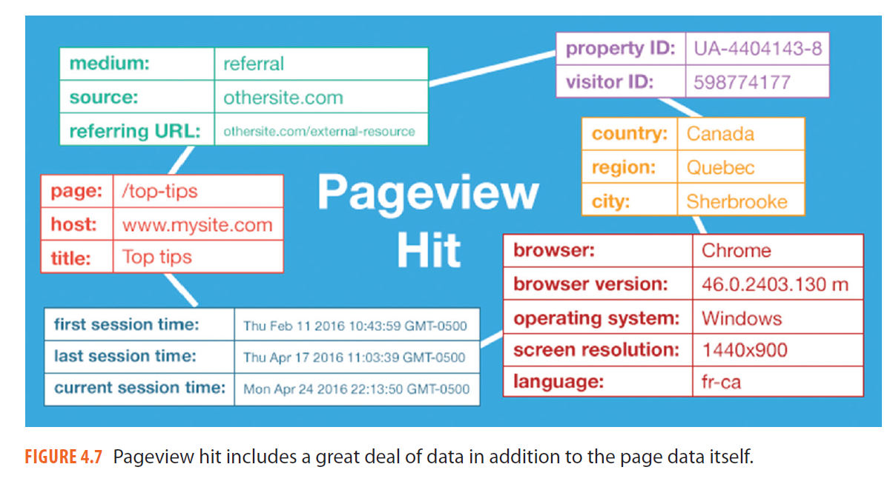
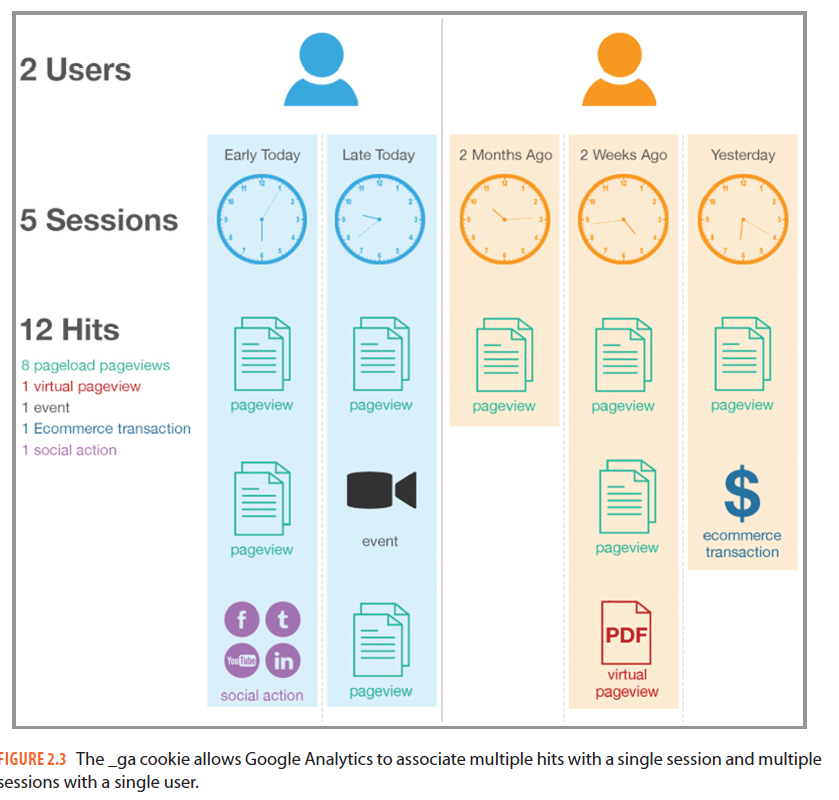
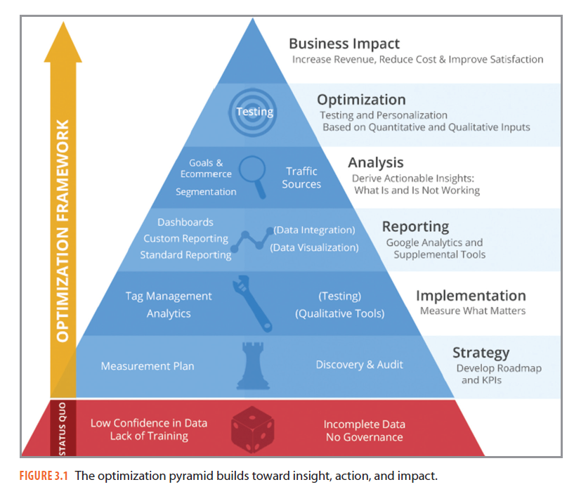

網路數據的三層結構 Hit Session User
在本單元中，會介紹一筆網路數據是怎麼被送到分析工具裡的、Hit／Session／User 這三層怎麼疊起來，以及為什麼使用者人數一定被高估、瀏覽頁次一定被操作。
🎯 學習目標
| # | 你會的能力 | 讓你能解釋的真實問題 |
|---|---|---|
| 1 | 說出 Hit、Session、User 三層各自是什麼、誰包住誰 | 為什麼同一份報表裡「使用者 14、工作階段 21、瀏覽頁次 32」這三個數字不能互相取代？ |
| 2 | 指出 User 這個數字被高估的四個來源 | 一個媒體說自己有「800 萬不重複使用者」，這 800 萬裡面有多少是同一個人？ |
| 3 | 判斷一個把 PV 拉高的做法，是把餅做大還是把餅切碎 | 為什麼你點進一篇新聞，要按五次「下一頁」才看得完？ |
🤖 課前 AI 互動（10 分鐘，上課前完成）
請利用 AI 當成你的學習助理，請輸入下列提示
我在學網站流量分析。請用一個開餐廳的比喻解釋 Google Analytics 裡的 Hit、Session、User 三個層級分別對應餐廳裡的什麼，並說明為什麼 User 這個數字在技術上一定會被高估。每一點請標註這是 Google 官方定義，還是你自己的推論。
然後追一句：
如果我換一台電腦、或者清掉瀏覽器的 Cookie，Google Analytics 會把我算成同一個人還是兩個人？請直接回答，不要說「視情況而定」。
把 AI 給你的餐廳比喻抄一行帶到課堂上，等一下要跟旁邊的人比對誰的比喻撐得住。
大部分的 AI 會給你「客人＝User、來店一次＝Session、點一道菜＝Hit」。這個比喻在前兩層很好用，第三層開始鬆掉——因為餐廳認得出同一個客人的臉，瀏覽器不行。它認得的只是一塊叫 _ga 的 Cookie。比喻壞掉的那個地方，就是這一節真正要講的東西。
進行方式 ① 資料怎麼變成一個數字
- 資料不是「網站自己知道」，是每一次行為都主動送一包資料出去，那一包就叫 hit。
- 三個層級是包含關係：一個 User 包住多個 Session，一個 Session 包住多個 Hit。
- 這一段結束你要能在紙上畫出這三層，並在每一層寫出一個實際的例子。
資料是使用者的瀏覽器主動送出去的
網站裡埋了一段追蹤碼。使用者做了某件事——載入一個頁面、點一個按鈕、完成一筆交易——追蹤碼就被觸發一次，把這次行為打包送到分析工具的伺服器。
那一包就是 hit（匹配）。常見的 hit 有四種：頁面瀏覽（pageview）、事件（event）、電子商務交易（ecommerce）、社群互動（social）。

一個 pageview hit 除了頁面網址，同時帶了來源、地區、瀏覽器、螢幕解析度、語言、以及這個訪客的 ID。你在報表上看到的所有維度，都是從這一包裡拆出來的。
沒有送出 hit 的行為，等於沒有發生
這是整門課最需要先接受的一件事：分析工具只知道被送出去的東西。使用者盯著一頁看了十分鐘卻沒有任何動作，中間沒有 hit，工具就不知道那十分鐘存在。
後面所有「被低估」「被高估」的說法，追到底都是這一句。
三層是包含關係，不是三個並排的數字

同一塊 _ga Cookie 讓工具把多個 hit 收成一個 session，再把多個 session 收成一個 user。圖上左邊那位使用者今天來了兩次，右邊那位在兩個月裡來了三次。
看這張圖的時候要看的是框線，不是數字：hit 被裝進 session 的框，session 再被裝進 user 的框。報表上的三個數字是同一批行為在三個不同高度上被數了三次。
你看到的每一個指標，都是同一批行為在某一個高度上被切了一刀。切的高度不同，數字就不同，但底下的事實是同一件。
進行方式 ② User 為什麼一定被高估
- 工具認得的不是人，是一塊 Cookie，所以換裝置、清 Cookie 都會多算一個人。
- 高估的方向是單向的：技術上只會把一個人拆成很多個，不會把很多人併成一個。
- 這一段結束你要能講出至少三個高估來源，並說出哪一種在校園環境特別嚴重。
GA 認的是 _ga 這塊 Cookie，不是你
Google 官方的定義是：為了判斷哪些流量屬於哪一位使用者，每一個 hit 會帶著一個獨特識別碼送出去。這個識別碼預設是一塊叫 _ga 的第一方 Cookie，裡面存的是 client ID。
所以「使用者」這個詞在報表上的真正意思是：一塊我沒見過的 Cookie。
四種情況會讓同一個人被算成好幾個
| 情況 | 為什麼多算 | 在校園裡有多常見 |
|---|---|---|
| 換電腦、換手機 | 兩台裝置兩塊 Cookie | 非常常見，手機看標題、電腦寫報告 |
| 用學校的公用電腦上網 | 每一次可能都是新的 Cookie | 常見 |
| 沒有登入 | 沒有 User-ID 可以把裝置串起來 | 幾乎是常態 |
| 清掉 Cookie 或用無痕視窗 | 舊的識別碼直接消失 | 少，但一次清掉就等於換一個人 |
User 的誤差是單向的，所以它一定被高估
四個來源都是「把一個人拆成很多個」，沒有一個是「把很多人併成一個」。誤差只往一個方向跑，數字就一定偏高。
這件事的實用價值在於：你看到別人的 User 數字時，可以放心地打折，而不必猜方向。
New User 被高估，Return User 就被低估
新使用者的判定用的是同一塊 Cookie，所以只要 Cookie 是新的，就算成新使用者。結果是新使用者數被高估、新使用者比例也被高估。
新的那一邊被多算，回訪的那一邊自然被少算——回訪使用者一定被低估。這一組數字要一起看，不能只挑對自己有利的那一個講。
User 與 Visitor 不是同一件事
Google 現在只用 User，不用 Visitor。這兩個詞的差別在能不能被串起來：能被唯一識別的叫 User，串不起來的叫 Visitor。同一個人在三台裝置上就是三個 Visitor、一個 User。所以 UV（不重複訪客）這個數字會大於 UU（不重複使用者），看到報告上寫 UV 要先問是哪一種口徑。
User 不是人，是一塊 Cookie。把它當成人來報告的那一刻，你的簡報就開始說謊了。
進行方式 ③ Pageview 是最容易被操作的數字
- PV 直接綁著 CPM 廣告收入，所以它是最有動機被做出來的一個數字。
- 拆稿、無限捲動、文末推薦，都是在不增加內容的前提下把 PV 做大。
- 這一段結束你要對一個具體做法下判斷：它把餅做大，還是把同一塊餅切碎。
Pageview 就是一個頁面被載入一次
官方定義很短：一個頁面在瀏覽器裡被載入（或重新載入）一次，就是一次 pageview。Pageviews 這個指標就是把這些次數加總。
重新整理也算。所以同一頁按五次 F5，就是五次 pageview。
Unique Pageview 問的是「這個工作階段有沒有看過這頁」
在同一個 Session 裡，同一頁看幾次都只算一次，這叫 unique pageview。
什麼時候該用它？當「同一頁被同一個人看很多次」這件事沒有意義的時候——例如首頁、列表頁，使用者本來就會來回進出。
PV 綁著廣告收入，所以它最容易走火入魔
CPM 廣告按「每千次曝光」計價，一個頁面載入一次就是一次版位曝光。PV 直接等於可以賣的庫存，這是它長年被當成最重要指標的原因。
只看這個數字，內容決策必然變形——這正是上一節 Goodhart 定律講的東西，現在你看到它在自己的產業裡具體長什麼樣。
把 PV 做大的五種常見做法
| 做法 | 怎麼把 PV 做大 | 使用者付出什麼 |
|---|---|---|
| 拆稿 | 一篇文章切成五頁，PV ×5 | 每讀一段要點一次、等一次載入 |
| 無限捲動 | 捲到底自動載入下一篇，計為新的 PV | 找不到頁尾，也回不去原本那篇 |
| 文中連結 | 讀到一半跳去另一篇 | 讀完的機率下降 |
| 文末推薦 | 讀完接著點下一篇 | 這一種通常是雙贏，使用者本來就想繼續 |
| 增加外部導流（Referral） | 把人帶進來，PV 跟著長 | 通常沒有代價，這是把餅做大 |
判準只有一句：把餅做大，還是把同一塊餅切碎
增加外部導流是把餅做大——多了原本不會來的人。拆稿是把同一塊餅切碎——同樣的內容、同樣的讀者，只是多算了幾次。
兩種做法在報表上看起來一模一樣，都是 PV 上升。分辨它們的唯一辦法是同時看另一個數字：使用者數有沒有跟著長。
PV 上升不是好消息，也不是壞消息。要看它旁邊的 User 有沒有一起動——只有 PV 動，那塊餅就是被切碎的。
進行方式 ④ 這些名詞為什麼一直在變
- 這門課的指標名稱以 Google Analytics 為準，盡量中英對照，但工具改版時對不起來的地方會直接說。
- GA3 以網站為主體（媒體思維），GA4 以使用者為主體（電商思維），指標名稱因此整批換過。
- GA3 的概念沒有作廢——它是所有網站分析工具的共同語言，換一個工具還是這一套。
GA3 用網站的眼睛看，GA4 用使用者的眼睛看
GA3（Universal Analytics）的世界觀是「一個網站裡的流程」：使用者在我的網站裡怎麼走、看了幾頁、從哪裡離開。它看不到這個人離開之後去了哪裡。這是媒體思維——我關心的是我的版面。
GA4 的世界觀是「一個使用者的歷程」：所有行為都是事件（event），可以跨網站、跨 App 串起同一個人。這是電商思維——我關心的是這個人最後有沒有買。
換了世界觀，指標名稱就整批換過
同一件事在兩代工具裡叫不同名字，這是你之後查資料最容易踩到的坑。這一節教的三層結構在兩代都成立，變的是名字，不是結構。
看到網路上的教學文，先確認它在講哪一代——文章裡出現「跳出率」和「工作階段」通常是 GA3，出現「參與度」和「事件」通常是 GA4。
最上面那一層永遠不是數字

這一節在的位置是金字塔中間偏下的「Reporting」。往上還有分析與最佳化，最上面才是商業影響。
會看指標只是往上爬的第一階。指標本身不是目的——這門課最後要問的永遠是「所以要改什麼」。
⚠️ 迷思攔截
| 常見迷思 | 為什麼太簡化 | 攔截 |
|---|---|---|
| 「使用者數就是有多少人來過」 | 工具認的是 Cookie，同一個人在三台裝置上是三個使用者 | 看到 User 就在心裡改讀成「不重複瀏覽器」 |
| 「使用者數有誤差，可能多也可能少」 | 四個誤差來源都是把一個人拆成多個，方向是單向的 | 它只會被高估，可以放心打折 |
| 「PV 高代表內容受歡迎」 | 拆稿與無限捲動可以在內容不變的情況下把 PV 拉高 | PV 一定要跟 User 一起看，只有 PV 動就是切碎 |
| 「重新整理不算 PV 吧」 | 官方定義是「載入或重新載入一次」，重整就是一次 | 所以自己開自己的網站測試時要記得排除 |
| 「GA4 出來了，GA3 那套可以不用學」 | 三層結構在兩代都成立，換工具也一樣；變的是名稱 | 學的是結構，不是某一版的按鈕位置 |
| 「沒有 hit 就代表使用者離開了」 | 只代表工具沒收到東西，人可能還在看 | 「沒有資料」和「沒有發生」是兩件事 |
先修與後續
- 先修：數據素養暖身 好問題 vs 壞問題——那一節練的三個檢查（分母、比較對象、時間窗），這一節開始有具體的分母可以拿來練。
- 後續：Session 的定義與四種切法——三層裡中間那一層有四種被切斷的方式，是這門課最常被考的地方。
- 平行相關：商業指標的四個象限（W1）——PV 為什麼會綁著廣告收入，那一節的四象限給了組織層面的答案。
- 平行相關：GA4 與 AI 問答分析（W3）——把這一節的名詞帶去問 AI 之前，先在這裡確認自己講的是哪一代。
💬 討論／分享／反思
配對分享
請同學兩兩一組，互相講一次三層結構：
- 用自己的話說 Hit、Session、User 分別是什麼
- 各舉一個自己今天真的做過的行為當例子
- 對方要挑出你講錯或講不清楚的那一層
判例演練
請看下面這句媒體自我宣傳，兩人一組回答：
本站上月不重複使用者突破 800 萬，全台每三人就有一人是我們的讀者。
- 這 800 萬裡面，哪些人被重複計算了
- 「每三人就有一人」這個換算漏掉了什麼
- 如果你是這家媒體的分析師，你會建議改成怎麼說
寫下反思
請寫下這一句並補完：
我原本以為「使用者數」就是有多少人來過，現在我知道它其實是＿＿＿。
小作業
打開一個你自己有後台的帳號（IG、YouTube、部落格都可以），找出「使用者／觀看次數／不重複觀看」這三種數字中你能取得的兩種，寫下：
- 這兩個數字各是多少
- 它們的比值是多少
- 這個比值告訴你什麼——是同一批人來很多次，還是很多人各來一次
學生版｜更新於 2026-09-12 16:09